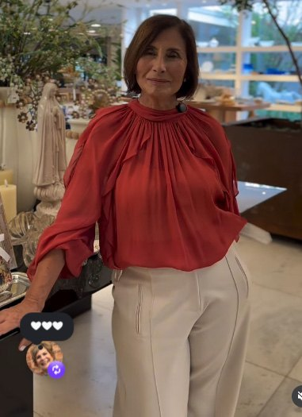

M
Irene Moreira · multimarca há 40 anos
Desejo Guiado
A cliente se vê na peça antes de ir à loja.
Venda guiada por inteligência artificial — a vendedora no comando, a IA como mira.
protótipo funcionando
provado em peças reais
O problema de hoje
A venda boa se perde no caminho.
Condicional que volta
Mandar peça na casa da cliente que não serve, não combina, não é o gosto dela — e volta. Mexe no giro e cansa a relação.
Tempo separando
A vendedora gasta horas garimpando a arara, sem saber se a cliente vai gostar antes de levar.
A cliente não se vê
Foto de peça no cabide não gera desejo. A cliente precisa se ver nela — no corpo dela, pra ocasião dela.
E se a cliente recebesse, no WhatsApp, a foto dela mesma vestindo a peça — curada pela vendedora, pronta pra ocasião — antes de sair de casa?
Como funciona
Da vitrine ao WhatsApp, em minutos.
1
Escolhe a cliente
A foto dela (ou da rede social).
2
Fotografa as peças
Anda pela loja, câmera do celular → entra no sistema.
3
Monta o look
Peça + acessório + ocasião — só o que serve nela.
4
A IA veste a cliente
Imagem pronta, produzida, em segundos.
5
Manda no WhatsApp
Ela se vê na peça, reage e quer provar.
6
Provador / venda
O condicional já vai certo — menos troca, mais venda.
A vendedora continua dona da venda. A IA é a mira — torna a curadoria dela mais certeira.
Por dentro · do celular ao celular
Como a foto vai e volta.
Câmera, estúdio e envio são o mesmo app, no celular da vendedora. A foto nunca "vai pra outro lugar" — ela já nasce dentro do sistema.
1
Captura
A vendedora fotografa a peça e printa a cliente (da rede social) — no próprio celular.
2
Entra direto no sistema
É o mesmo app: a foto já cai dentro. Sem e-mail, sem mandar pra ninguém.
3
Ela opera
Monta o look na mesa, escolhe o estilo e toca "Gerar". A IA veste a cliente.
4
Volta no celular dela
A imagem final, pronta, com as teclas — a um toque de mandar pra cliente.
Nada de WhatsApp Web ou e-mail no meio. Um app só, login da vendedora — seguro e na conta da loja.
Sistema 2 · a cliente decide
O alvo. E um só toque.
M
Prévia com IA
Vi você nessa.
Vestido de gala · novidade
♥ Acertou em mim
Mira de novo
Me surpreenda
Provador reservado
A peça aparece emoldurada pela mira — discreta, elegante. A cliente reage no instinto, sem digitar:
♥ Acertou em mim
vira peça física — provador ou condicional.
Mira de novo
o sistema re-mira na hora, aprendendo o gosto dela.
Me surpreenda
abre espaço pra uma escolha mais ousada.
Provador reservado
fecha: a peça é separada e reservada pra ela (gatilho de escassez).
Sem letreiro, sem pressão. A peça não se anuncia — é reconhecida.
A prova — hoje, com peças reais da loja
Não é conceito. É real.
Pegamos fotos reais da loja (peça no cabide, na parede de espelhos) e a IA vestiu modelos — mantendo a peça idêntica.
peça real → modelo
 →
→

Pantacourt Carmim — mesmo corte, mesma cor, até o recorte no joelho.
outra peça real → modelo

Jeans metalizado Carmim — o brilho prateado preservado. 2 de 2 acertos.
Cliente real, peça real
A sua cliente, na sua peça.

foto da cliente
→

produzida pela IA, dentro do app
Da foto de uma cliente real à imagem final pronta pra enviar — no celular da vendedora. O ciclo completo, provado.
A foto de loja não trava nada
Do cabide à modelo.
A vendedora fotografa a peça do jeito que ela está — no cabide, com fundo de loja. O sistema tira o cabide e o fundo, e veste a cliente.

foto de loja (com cabide)

cabide sumiu, modelo vestida
O sistema por dentro
Simples de operar, sofisticado no resultado.
Mesa de separação
Como na loja: a vendedora separa as peças, depois monta o look e veste a cliente. Tela de TV touch + celular.
Tamanho certo (34–54)
O sistema mostra só o que serve na cliente — não monta look que não cabe. Zero frustração.
Cápsula & combinar
Gera vários looks de uma vez e sugere o acessório que casa com cada peça.
App de celular
Captura → monta → envia no WhatsApp, na mão da vendedora, poucos toques.
Toque grande, tela limpa, fluxo de 3 toques — feito pra vendedora usar com o dedo, andando pela loja.
Pra rodar na loja de verdade
O que já temos e o que falta.
já temosAs telas (celular + TV), o fluxo, a trava de tamanho, e a prova de que a IA veste a peça real — o "encantar".
falta construirA nuvem que liga tudo: login das 10, banco de clientes/peças, e o "Gerar" chamando a IA ao vivo.
Plano em 3 fases
Fase 1 · semanas
Piloto
App + nuvem (Supabase) + 1 motor de IA. 1 vendedora, ~20 VIPs. Captura→gera→envia de verdade.
Fase 2
Loja toda
10 vendedoras, WhatsApp oficial, reações que treinam a mira, métricas de venda.
Fase 3
Escala
GPU local (custo + privacidade), guarda-roupa da cliente, app instalável.
Custo: geração na nuvem ~centavos por imagem · banco grátis no começo · a 3070 da casa serve pro piloto. O investimento real é montar a nuvem. LGPD: foto de cliente com consentimento — base do projeto.
M
Pronto pra um piloto.
O conceito está provado com as peças reais da loja. O próximo passo é colocar uma vendedora rodando de verdade — e medir a venda.
Desejo Guiado · Irene Moreira · multimarca feminina · Paulínia/SP